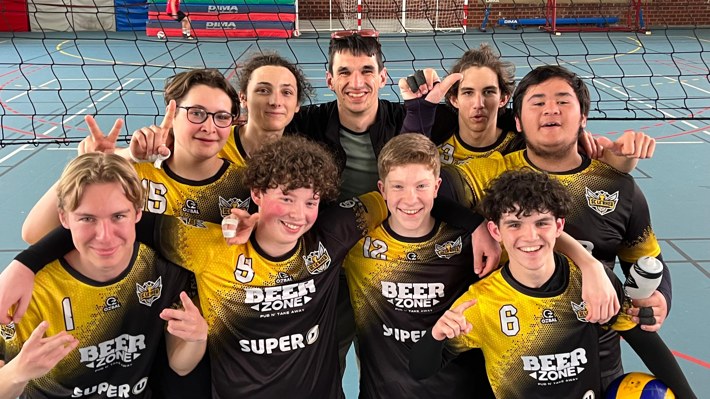

Benjamin BOUVIER
Je vais ici vous présenter mes différents centres d'intérets.
J'ai toujours beaucoup aimé les jeux vidéos et le sport.

J'ai toujours été passionné par l'informatique, et particulièrement les Jeux Videos.
J'y ai toujours joué, que ce soit sur ma tablette étant petit, sur mes consoles ou sur mon ordinateur.
Aujourd'hui, je joue beaucoup à des jeux de stratégies comme Valorant, des jeux de plateformes comme Céleste
ou encore des jeux de types bac à sables tel que Minecraft.
Tous ces jeux m'ont appris beaucoup de compétences importantes dans la vie de tous les jours. Comme la communication, la patience, la détermination, ou encore l'imagination.
Mais comme les jeux vdéos ne permettent pas de se dépenser et faire du sport, c'est pourquoi le sport est aussi une partie importante de ma vie.
Depuis mon plus jeune age, j'ai toujours adoré pratiquer une activité sportive.
J'ai commencé avec du Judo étant tout petit, puis j'ai testé beaucoup de sport différents,comme le badminton,
le basket, le tir à l'arc en passant par du ping pong.
Mais aujourd'hui, je me concentre d'avantage sur le Volley, ainsi que la calisthénie.
